We develop a multi-tier web solution using local and external data sources.
Languages Used: HTML, CSS, PHP
Database: XAMPP MySQL
Requirements: Users can view, add, edit, delete photos, manage accounts, and log in/out.
Home Page

Users can enter album titles, upload photos, and leave comments in an album.
View Album Page
Users can view existing albums and create new ones.
Create New Album Page
Users can enter a new album name and create an album from the View Album page.
Album Details Page
Users can add photos, rename albums, or delete them after creation.
Add Photo Page
Users manually enter an album name, upload a photo, and add a comment.
View Photo Page
After adding a photo, users can view all details on the View Album page.
Profile Page
Users can edit their profile, delete their account, or sign out.
Login Page
After signing out, users must enter their username/phone and password to log in again.
Web Design Details - Second Project
We are tasked to create a multimedia-rich website from scratch for a client of your choice which we will create a website prototype that display the webpages' design and basic navigation.
Languages Used: HTML, CSS, JavaScript.
Picture/Video software creator:
Adobe After Effects, Adobe Premier Pro, Adobe Illustrator, Adobe Photoshop, Adobe XD
Requirements: We are need to include these website requirements such as Homepage, About Us, Services/Products, Testimonials/Reviews, Contact Us, Blog/News Section, Multimedia Gallery, Interactive Features and Responsive Design. We are also required to create a video promoting the business/organization that you have chosen with creative computer-generated imagery (CGI) or visual effects.
Home Page
The homepage features details about the company, vision, mission, and a fun tic-tac-toe game at the bottom for user interaction.
News Page
Users can read the latest Burger King achievements by clicking the "Read More" link under each news picture.
Promotion Page
Users can watch a promotional video, learn about rewards, and read terms and conditions for the latest Burger King promotion.
Menu Page
Each food item includes details, pricing, nutritional facts, and a voting section where users can vote for their favorite food.
Web Design Details - Third Project
We developed a multimedia product prototype for a food company using a detailed design plan.
Languages Used: HTML, CSS, JavaScript, PHP
Requirements: Implement the planned assets, source media files, and structure the application correctly.
Home Page
Users can view the food menu with prices and add selected food items to their expenses.
Home Page (Alternate View)
Another view of the homepage where users can select food and manage expenses.
Preferred Area Page
Users can select their state to find available restaurants by clicking the "View Places" button.
Restaurant Area List
After selecting a state, users are shown a list of areas with available restaurants.
Restaurant Details
Users can view restaurant details including name, phone number, address, and access a map showing the exact location.
Location Search Page
Users can search for restaurants by name and check their existence on Google Maps.
Web Design Details - Fourth Project
I have created a web apps which focusing towards the crud operations that integrate with the admin panel and user side.
Languages Used: HTML, CSS, JavaScript and PHP
Login Form Page
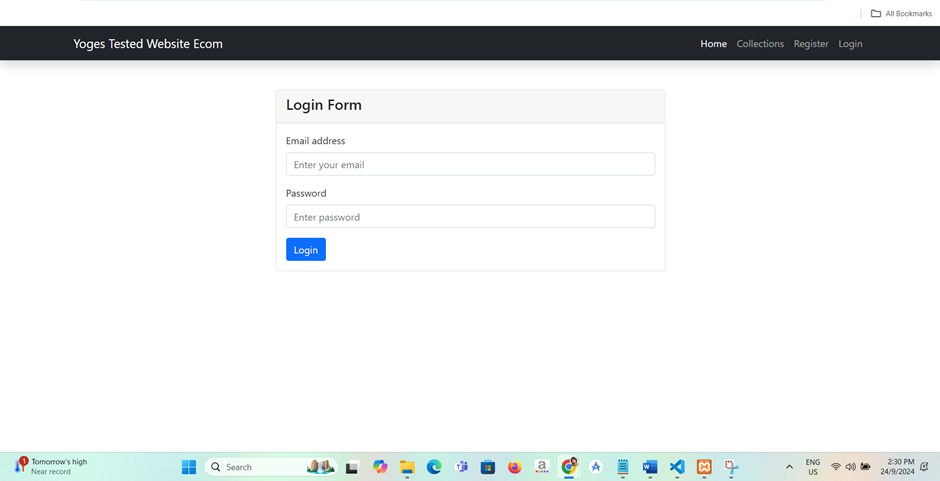
User is required to enter their credentials in the login form in order to access this web apps.
Registration Form Page
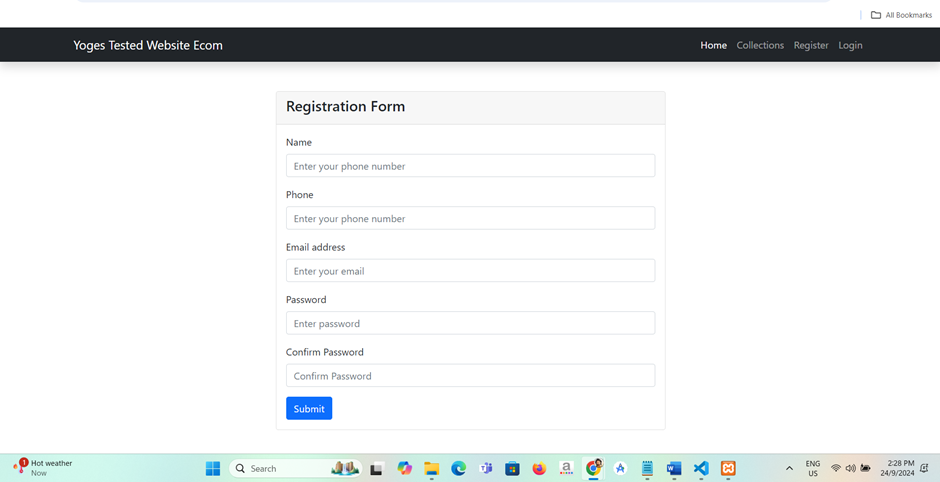
User able to register is there is no account exist in this web apps. Once register, user able to go the login page to enter their username and password to use this web app.
Admin Panel Page
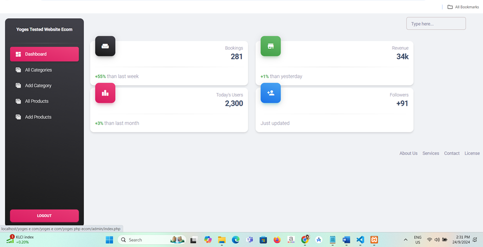
User is allowed to use this admin panel page once they login in where user can view all categories, add category, view all products, add products and logout also.
Add Category Page
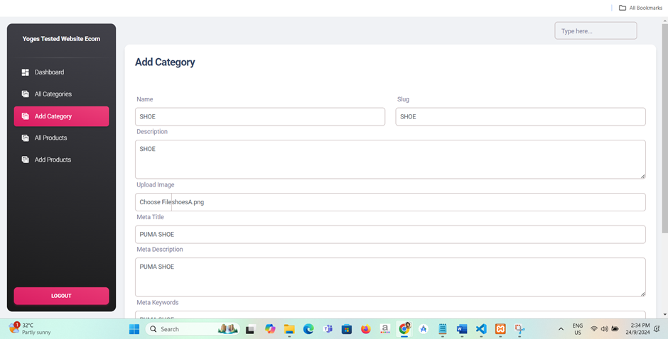
User are able to enter any product category in add category page and once they fill all the details, user just click the save button to save the details.
Category Page
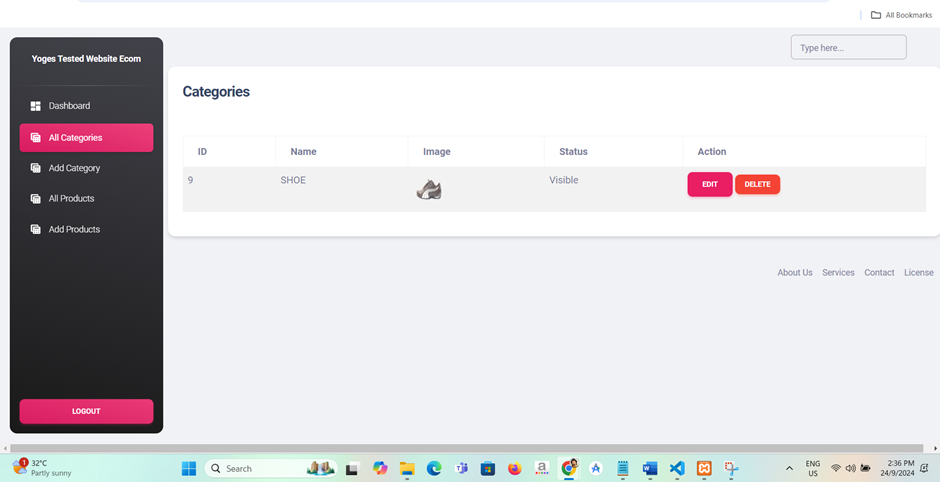
Once user successfully enter the category detail, user can see the category detail in the all categories page where it view the user in listed form in the container.
Edit Category Page
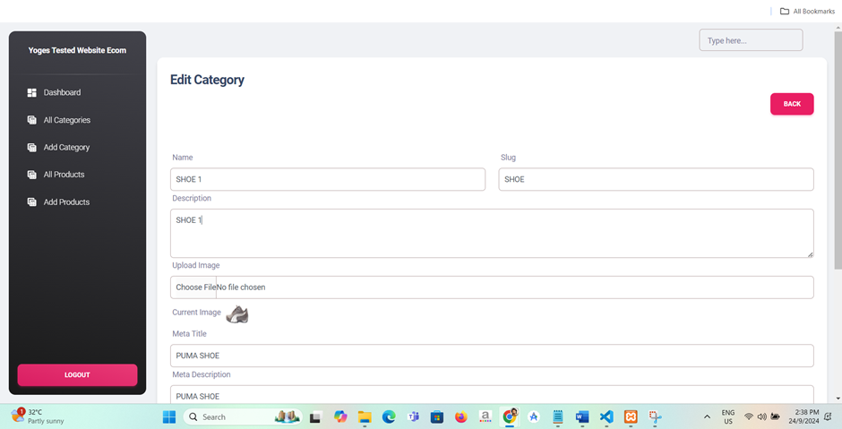
User is allowed to edit the categories details in edit category page if the user wanted to make the changes and then click the update button.
Category List Page
Now the user has successfully made the update as the changes can be seen in all categories page.
Add Product Page

User can add any product in the add product page where user need to enter the details of the product and then click the save button at the bottom of the page.
Products List Page
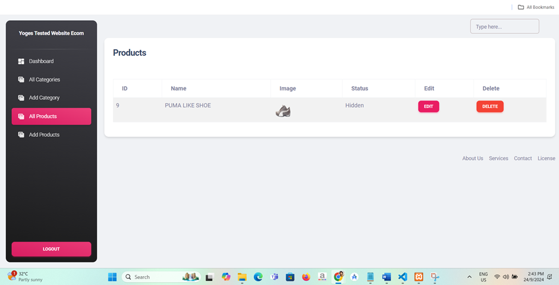
Once user is successfully enter the product details in the add product page, user able to view that details in the all product page.
Collection List Page
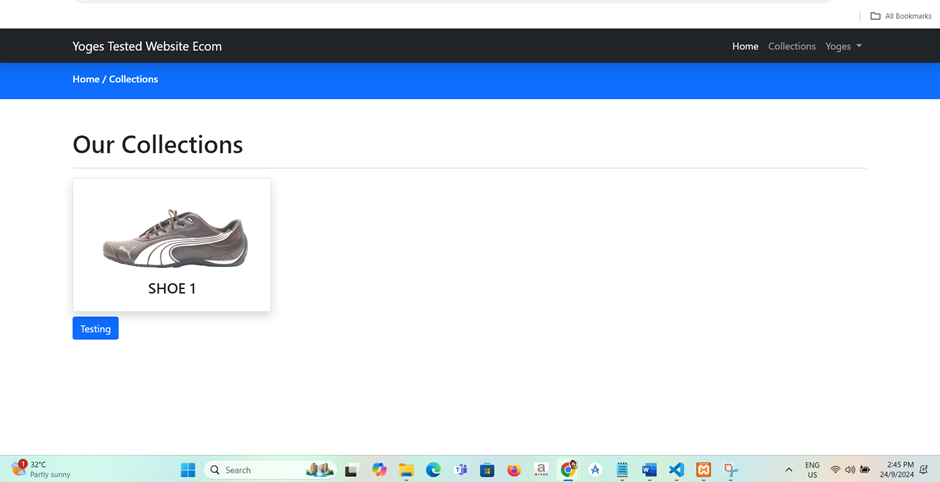
This is one of the user side page where user can see the details of the product from the admin panel in the collection page.
Web Design Details - Fifth Project
I have created a web apps which able to interact with payment gateway that allowed make payment of the product via payment gateway
Languages Used: HTML, CSS, JavaScript and PHP
Home Page

This is the homepage where user is can select any four shoes they prefer to buy and click the check in button.
Order Form Page
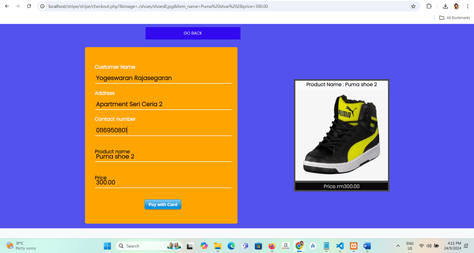
User will fill up the details such as customer name, address and contact number once the user select one of the shoes from the homepage and click the pay with card button after they successfully enter their details.
Payment Confirmation Page
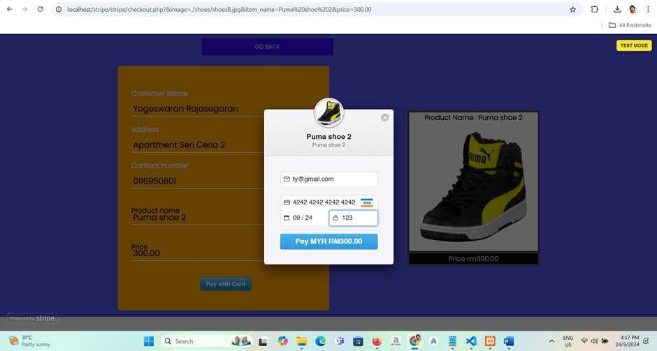
User will enter the test mode details set by Stripe gateway in Stripe Docs and click the “Pay MYR RM300.00” button.
Payment Success Message Page

Once the user click that button from the previous screenshot, it show the transaction has been performed successfully message and it will remain for 5 seconds and then it will show the homepage again.
Checking Stripe Dashboard
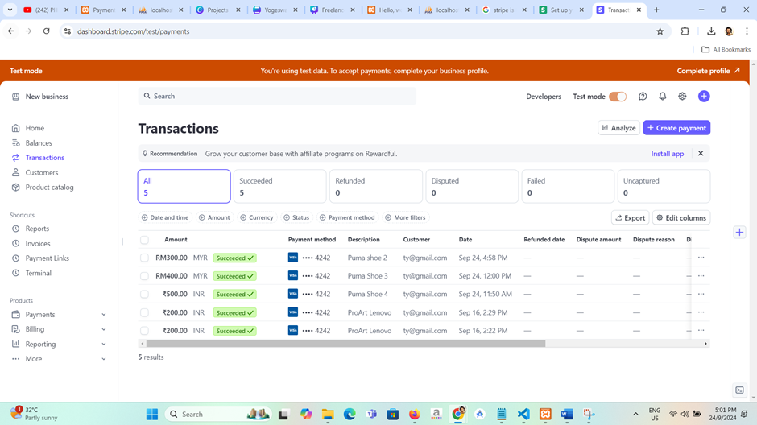
User able to check their own personal Stripe account in test mode by go to the Transaction page to see the current purchase that has been made from that web apps.